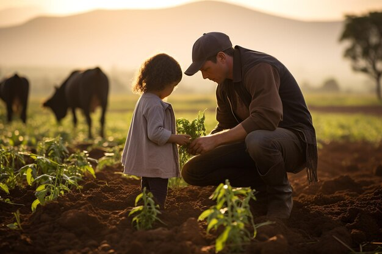

Introdução
A herança sustentável é um conceito que busca preservar o patrimônio cultural e natural de forma a garantir a sua sustentabilidade para as gerações futuras.
Objetivos
- Preservar o patrimônio cultural e natural
- Promover a educação ambiental e cultural
- Fomentar a participação comunitária
Exemplo de herança sustentável
"Espera-se fortalecer a prática de transmitir de uma geração a outra, de forma responsável e equilibrada."Ser agricultor no Brasil é tarefa para os fortes. Somente eles conseguem suportar as pressões que vêm de dentro e de fora da porteira. Do lado de fora, a maior parte da opinião pública, que desconhece o que são as boas práticas no campo, acredita que a maioria dos produtores são os vilões da história, envenenando as plantações com os defensivos agrícolas. O fato é que o Brasil consome pouco agroquímico, comparado à área cultivada